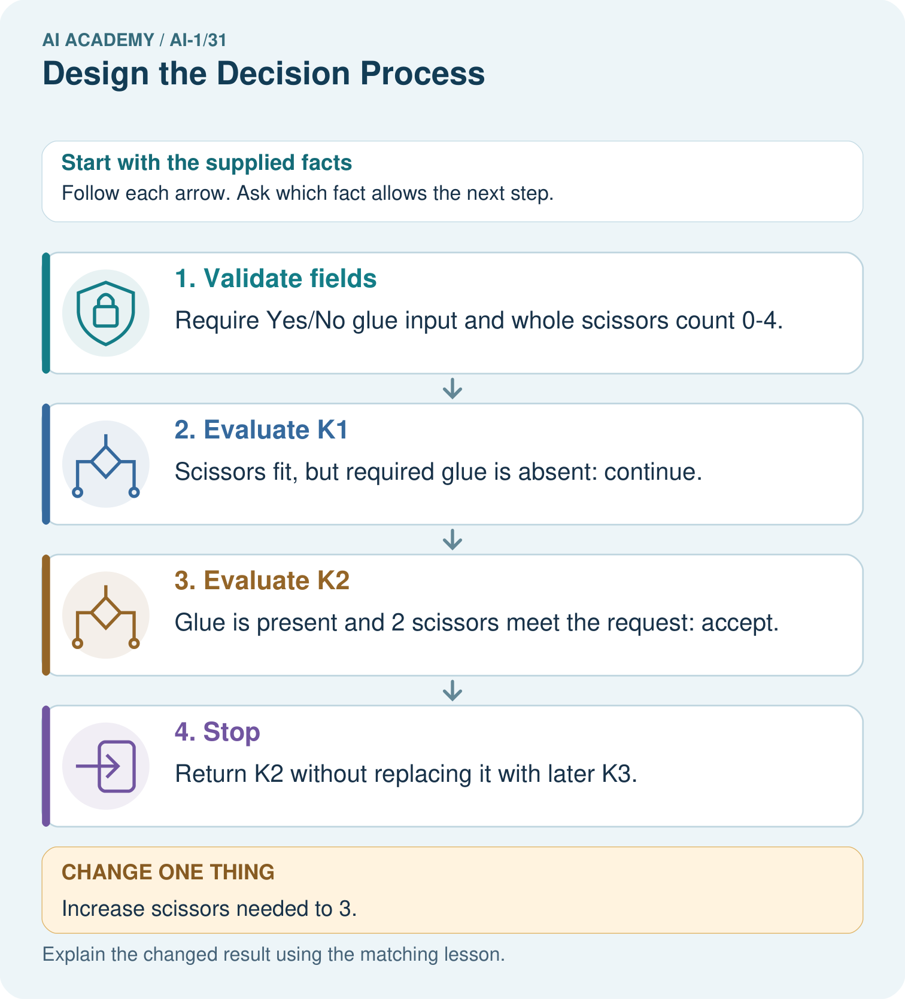

AI Academy · Level 1 · Grade 6 · Week 31 · Workbook
Design the Decision Process
Learn to understand, design, build, test and explain AI systems responsibly.
Project: Helpful Classroom Sorter
Workbook · 1 of 19
Recall and choose your starting point
Try the recall before opening notes. Then use a different colour or a labelled second line to correct your explanation.
Choose Inputs and Outputs
Without opening the old lesson, explain one key idea from Choose Inputs and Outputs. Give an example and a mistake that the idea helps you avoid.
Humans Set Boundaries
Without opening the old lesson, explain one key idea from Humans Set Boundaries. Give an example and a mistake that the idea helps you avoid.
Generate, Retrieve, or Calculate?
Without opening the old lesson, explain one key idea from Generate, Retrieve, or Calculate?. Give an example and a mistake that the idea helps you avoid.
Workbook · 2 of 19
Practise with fading help
Use W2: Track the current candidate for Designing a complete decision process. Record the answer once; the lesson and workbook refer to the same attempt.
| Given inputs | Procedure I chose | Middle steps | Result and check |
|---|---|---|---|
Workbook · 3 of 19
Individual reasoning check
Use the worked case for Designing a complete decision process. Proposed explanation: “One failed row proves no match”. Decide whether this explanation is supported. Point to the step or supplied fact that decides; explain your repair if needed.
Workbook · 4 of 19
Independent transfer case
Independent case: Design a complete room decision process
A new paper catalogue lists C1 first, capacity 4, quiet Yes; C2 second, capacity 8, quiet No. Valid requests give a whole group size from 1 to 10 and Quiet required Yes or No. A room fits if capacity is at least group size and the quiet condition is met; choose the first fit. Write a complete process with validation, search, state change and stopping rules. Trace 6 people No and explain the outcome for a blank quiet field. No booking takes place.
Attempt this case before feedback. Record any help. Earlier examples below are further practice; a case already practised with feedback cannot establish fresh transfer.
Workbook · 5 of 19
Your learning target
Rule: if paper then P, otherwise M. Inputs are paper, metal, glass and unknown. Repair the rule for paper and metal trays without inventing a glass tray. Trace all four inputs.
Workbook · 6 of 19
Solve the given case
A rule sends paper to P and everything else to M. Inputs include paper, metal and glass.
Trace glass and repair the rule.
Show your trace, calculation or evidence
Workbook · 7 of 19
Check a changed case
Write a decision process: a clear pencil goes to the pencil tray, a clear book to the shelf, and an unknown object to review. Trace a lunch box.
My independent answer and reason
Week 31 Test and reflect
Workbook · 8 of 19
Design a revealing test
Create a changed input, boundary case or missing-information case. Write the expected answer or safe response before testing.
| Test record | My evidence |
|---|---|
| Changed input or condition | |
| Expected answer or fallback | |
| Observed result | |
| Why the result occurred |
Workbook · 9 of 19
Project checkpoint
Complete the sorter v1 decision flow and annotate every branch with the evidence it uses.
The project change and evidence I will keep
Workbook · 10 of 19
Self check
I can explain the mechanism. I can show evidence. I can handle a changed case. I can name a limit. Mark each as not yet, with help or independently, and attach supporting work.
Teacher review ____________________ Next step ____________________
Workbook · 11 of 19
Transfer practice from the original programme
Rule: if paper then P, otherwise M. Inputs are paper, metal, glass and unknown. Repair the rule for paper and metal trays without inventing a glass tray. Trace all four inputs.
Record support used: none, hint or teacher explanation.
Workbook · 12 of 19
W1 Describe all possible kinds of ending
Name the three kinds of final output in the activity process and the condition that leads to each. Explain why a candidate failing its time check is not automatically a final no-match result.
Workbook · 13 of 19
W2 Track the current candidate
Trace 9 minutes with Quiet required No. Record the current candidate, time result, quiet condition and next step until the process stops. Explain why the request values should not change as the candidate advances.
Workbook · 14 of 19
W3 Repair an incorrect branch
A design says “If the activity is quiet OR its time fits, suggest it.” For 5 minutes with Quiet required Yes it selects B1. Identify the failed requirement and replace the condition with a correct one. Give the correct result for this request.
Workbook · 15 of 19
W4 Design a complete room decision process
A new paper catalogue lists C1 first, capacity 4, quiet Yes; C2 second, capacity 8, quiet No. Valid requests give a whole group size from 1 to 10 and Quiet required Yes or No. A room fits if capacity is at least group size and the quiet condition is met; choose the first fit. Write a complete process with validation, search, state change and stopping rules. Trace 6 people No and explain the outcome for a blank quiet field. No booking takes place.
Workbook · 16 of 19
W5 Preserve the first compatible option
For the activity catalogue, 15 minutes with Quiet required No allows several activities. Explain why returning the last compatible row breaks the agreed rule even though it fits. Describe a stopping rule that preserves the first match, and one way to check that a loop cannot repeat forever.
Workbook · 17 of 19
Feedback, return check and learning record
| Evidence | My record |
|---|---|
| Worked alone / hint / model | |
| First step I repaired and why | |
| New case checked later; date and result | |
| What I can now explain without notes | |
| One remaining question |
Revisit this idea with your teacher after a delay. Familiarity is different from explaining and using it on a changed case.
Workbook · 18 of 19
Pictorial case practice: Design the Decision Process
A fictional worksheet routes craft kits by required glue and number of scissors.
K1: glue No, scissors 2. K2: glue Yes, scissors 2. K3: glue Yes, scissors 4.
Request: glue required Yes, scissors needed 2. Return first kit meeting both requirements.

Where does the first original rejection occur, and why is K3 not originally selected?
Support used: alone / hint / worked example. This record is practice evidence.
Project connection: Draw the sorter’s decision branches, loop-back arrows, final outputs and invalid-input path so every valid case can terminate.
Workbook · 19 of 19
Project portfolio milestone
Project: Helpful Classroom Sorter
Current milestone: Present and defend. Demonstrate the system, explain one failure and justify the next improvement with evidence.
Draw the sorter’s decision branches, loop-back arrows, final outputs and invalid-input path so every valid case can terminate.
| Evidence to keep | My record |
|---|---|
| This week’s input and deciding step | |
| Prediction and actual result (or labelled paper trace) | |
| One change since the previous checkpoint and why | |
| One error or limit and the next test |